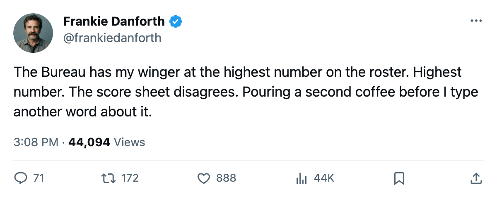

DANFORTH: Code Green, two wins in Boston's bank, and the winger the Book says is a 99
The division lead is thinner than the standings suggest, and the Bureau's highest-rated Leaf has 3 points in 8
 Frankie DanforthColumnist · Queen City Telegram
Frankie DanforthColumnist · Queen City Telegram
Code Green

The Panic Meter reads Code Green. 14 points in 9 games, 30 goals for, 14 against, 2 wins in a row. I am supposed to be happy and I am scanning the standings for the yellow.
Here is what I see.  Toronto Maple Leafs has 14 points.
Toronto Maple Leafs has 14 points.  Boston Bruins has 11. Three-point gap. The Bruins have played 7 games to our 9. Two games in hand, a 4-game win streak. If they win both they reach 15 and the division lead moves. My cushion is two hockey games that Boston Bruins has not played yet.
Boston Bruins has 11. Three-point gap. The Bruins have played 7 games to our 9. Two games in hand, a 4-game win streak. If they win both they reach 15 and the division lead moves. My cushion is two hockey games that Boston Bruins has not played yet.
The 2-0 shutout over  New York Rangers on Wednesday was what winning looks like when the machine works. 34 shots, 0 goals against. The Rangers came in with 14 points in 10 games and managed 18 shots. Mikael Tellqvist73 earned the second clean sheet in his 2 starts.
New York Rangers on Wednesday was what winning looks like when the machine works. 34 shots, 0 goals against. The Rangers came in with 14 points in 10 games and managed 18 shots. Mikael Tellqvist73 earned the second clean sheet in his 2 starts.  Rostislav Klesla87 logs 26.1 minutes a night and
Rostislav Klesla87 logs 26.1 minutes a night and  Barret Jackman86 adds 26.8. I have no notes from the third period because there was nothing to take notes on.
Barret Jackman86 adds 26.8. I have no notes from the third period because there was nothing to take notes on.
What I cannot stop staring at is the Development Index.  Marian Gaborik99 sits at +11 on form, the joint-highest riser in the league. His overall reads 99. The highest grade on this roster, above
Marian Gaborik99 sits at +11 on form, the joint-highest riser in the league. His overall reads 99. The highest grade on this roster, above  Roberto Luongo95 at 97, above
Roberto Luongo95 at 97, above  Mats Sundin92 at 92, above every other man in the dressing room.
Mats Sundin92 at 92, above every other man in the dressing room.
The score sheet says 3 points in 8 games. 2 goals, 1 assist. 20.4 minutes a night, $11.90M over 5 years.
The 19-year-old at the fourth-line centre spot has 8 points in 9 games at 19.6 minutes a night. The 23-year-old winger on the top line has 3 points in 8 at 20.4. I do not need to tell you which number makes me sit up and which one makes me pour a second coffee.
The Index says Gaborik is playing well above his base of 91. I believe the Index. I also know that a +11 form gain is supposed to show up in the goal column, and 2 goals in 8 games is not showing up. If the form is real, the production catches up. If it is noise, $11.90M buys me a winger who is good on Tuesday and invisible on Thursday. I have been asking for a centre behind Sundin since before I had grey at my temples. I will keep asking.
Code Green. The standings say it, the shutout says it, the 34 shots say it.  Mighty Ducks of Anaheim visits Friday with 15 goals allowed in 7 games. I have no intention of relaxing until the gap at the top of the Northeast is wide enough to make a Bruins coach look at the calendar and sigh.
Mighty Ducks of Anaheim visits Friday with 15 goals allowed in 7 games. I have no intention of relaxing until the gap at the top of the Northeast is wide enough to make a Bruins coach look at the calendar and sigh.
